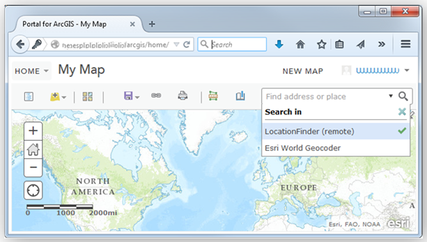
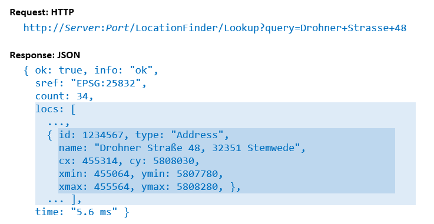
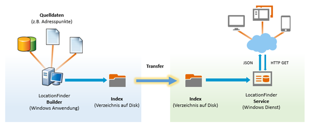
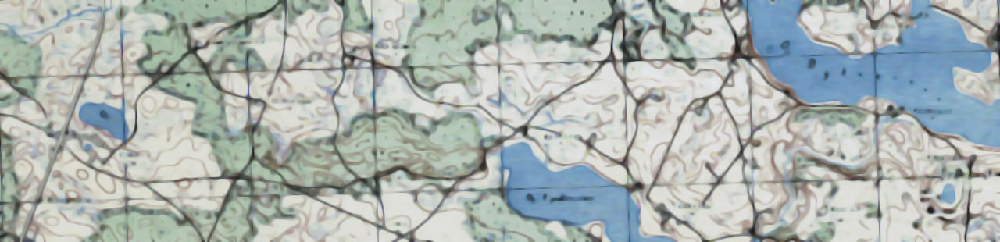

Dira GeoSystem's LocationFinder ist eine äusserst schnelle und benutzerfreundliche interaktive Suche nach benannten “Locations” wie z.B. Ortsnamen, Adressen, Grundstücksnummern, Points of Interest, etc. Der LocationFinder ist eine “on-premise” Lösung und daher auch für sensitive In-House-Daten verwendbar.
Der LocationFinder ermöglicht die interaktive Suche nach benannten “Locations” über ein einziges Textfeld. Locations sind z.B. Adressen, Ortsnamen, Postleitzahlen, Gletscher, Hydranten, und allgemein Points of Interest.
Der LocationFinder arbeitet auf Ihren eigenen Daten (es werden keine Daten mitgeliefert) und macht diese einer interaktiven Suche zugänglich, etwa um eine Karte richtig zu positionieren.
Der LocationFinder arbeitet auf Ihren eigenen Daten (es werden keine Daten mitgeliefert) und macht diese einer interaktiven Suche zugänglich, etwa um eine Karte richtig zu positionieren.
| Branche/Bereich | Suche nach (Beispiele) |
|---|---|
| Grossverteiler | Adressen, Filialen, evtl. Konkurrenzstandorte |
| Rettungsdienste | Orte, Flurnamen, Berge, Spitäler, Flugbasen |
| Polizei, Feuerwehr, Sanität | Adressen, Strassen, Quartiere |
| Gemeinden, Ämter | Flurnamen, Flurstücke, Dienststellen, Werkhöfe |
| Telekommunikation | Antennen, Adressen, administrative Regionen |

Der LocationFinder als Suche integriert in ArcGIS
Der LocationFinder ist optimiert auf Geschwindigkeit, einfache Administration (keine Abhängigkeiten), und weitgehende Konfigurierbarkeit.

Eine einfache REST API für die Integration
Der LocationFinder ist eine serverseitige Lösung. Er besteht aus zwei Programmen: einem Builder und einem Service. Der Builder liest Location-Daten und baut daraus eine Indexstruktur auf Disk. Der Service verwendet diese Indexstruktur um Anfragen zu beantworten, die über ein einfaches REST API an ihn gerichtet werden. (Der Service implementiert auch soweit die Esri REST API, dass er in die ArcGIS Plattform integriert werden kann.) Der Builder liest Daten in einem einfachen XML-Format. (Er kann mit Hilfe von Plugins auch Esri Feature-Klassen und einige andere Formate lesen.) Die Build-Configuration bestimmt, wie sich die Suche für den Endanwender “anfühlt” (verhält). So ist es zum Beispiel möglich, Schlüsselworte für Kategorien zu generieren und so dem Anwender bei der Suche zu helfen, Synonyme einzuschiessen und in gewissem Umfang die orthographische Toleranz zu bestimmen. Weiter ist es möglich, aus bestehenden Locations Aggregate abzuleiten, etwa Strassenzüge und Postleitzahlgebiete aus Adresspunkten.
Das Builder-Programm hat eine grafische Schnittstelle für die Erstellung der Build-Configuration. Das Service-Programm stellt jedoch nur eine REST API zur Verfügung und kein Interface für den Endanwender. Der Service ist dafür gebaut, in eine Anwendung (oder in die ArcGIS-Plattform) integriert zu werden. Dira GeoSystems verfügt über grosse Erfahrung bei der Integration des LocationFinders in Ihre Anwendungen.
Der LocationFinder verlangt .NET Framework 4.8 und eine schnelle lokale Disk für den Index. Es gibt keine weiteren Abhängigkeiten, Installation und Betrieb sind daher sehr einfach.
Der nächste Hauptrelease wird die Abhängigkeiten nochmals reduzieren und nur noch .NET Core (in der dann aktuellen Version) voraussetzen, womit der LocationFinder auch auf Linux-Systemen oder in Containern betrieben werden kann.
Ein Builder-Plugin für den Zugriff auf Esri Feature-Klassen unter Verwendung einer ArcGIS-Pro-Installation (anstatt ArcMap oder ArcGIS Server) ist in Arbeit.

Der LocationFinder benötigt pro produktiver Instanz des Service-Programms eine Lizenz. Testinstanzen brauchen keine Lizenz. Eine Erstlizenz ist für die erste Instanz notwendig, eine Folgelizenz für jede weitere Instanz pro Kunde.
Für den Erwerb gibt es zwei Optionen:
Für weitere Auskünfte oder ein Angebot kontaktieren Sie uns bitte: Telefon +41 44 2448442 oder Mail an hello@dirageosystems.ch
